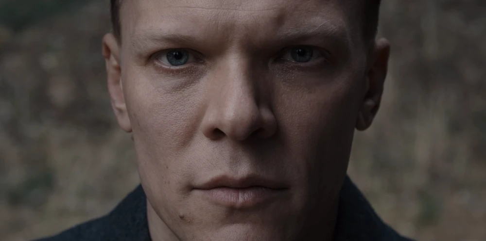
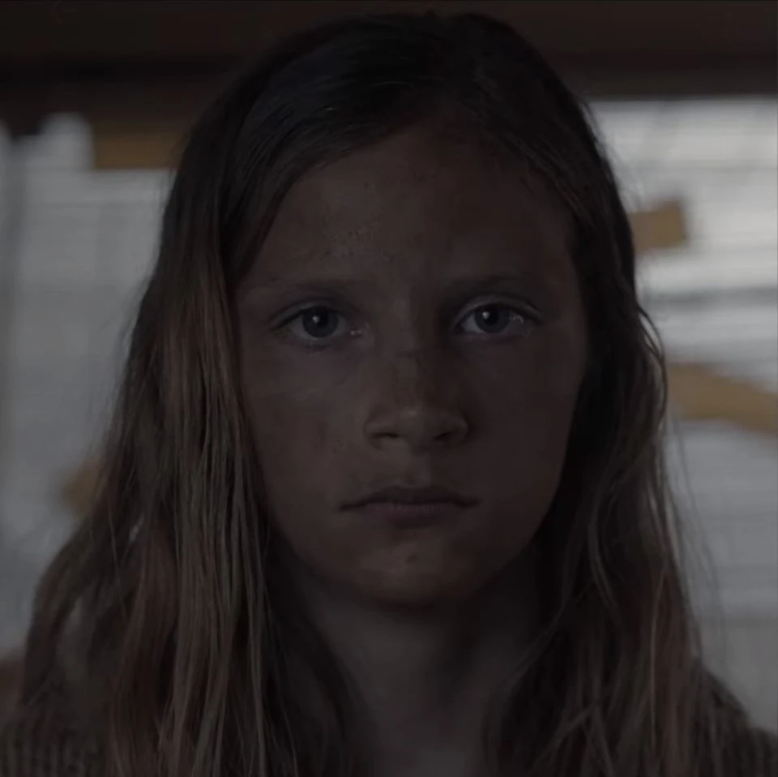
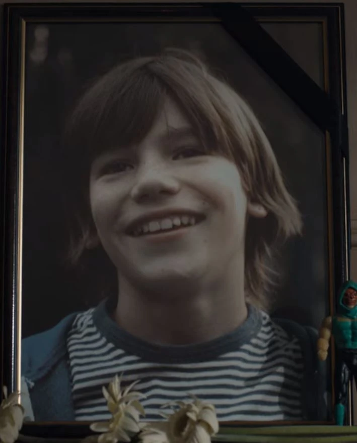
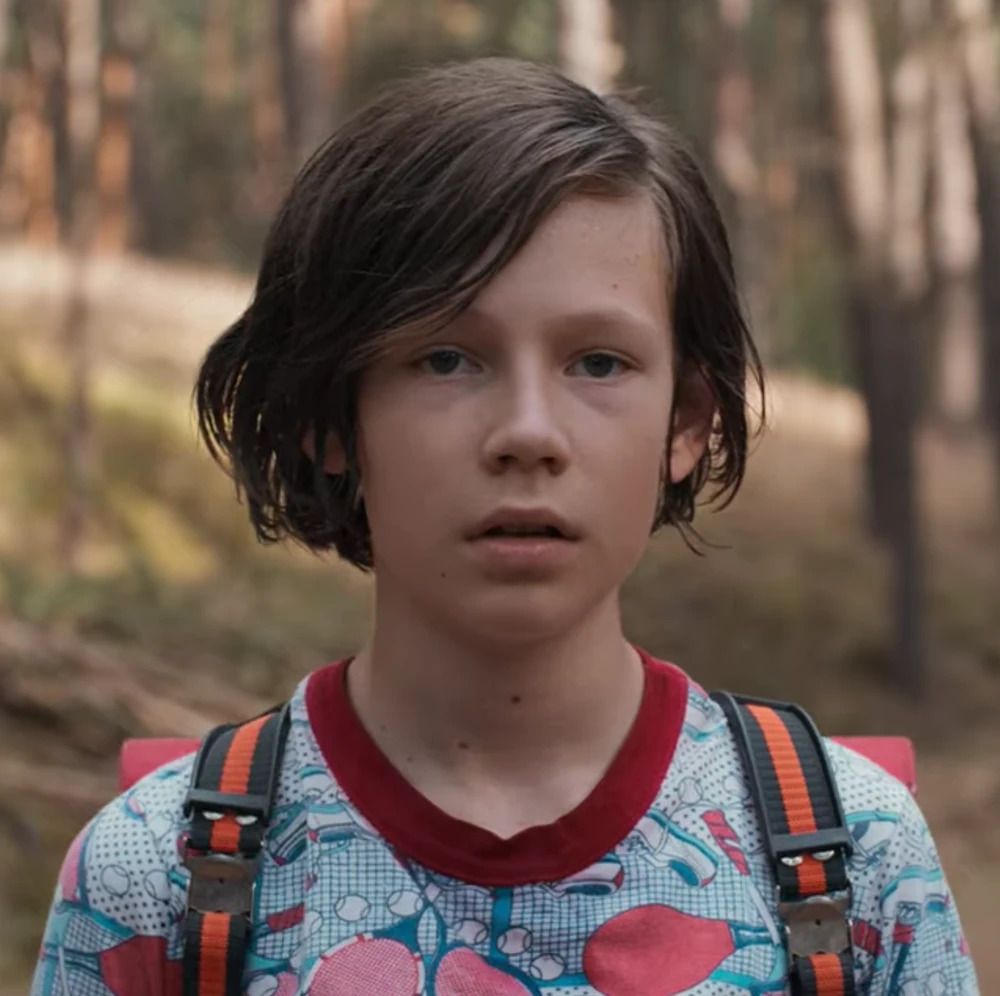
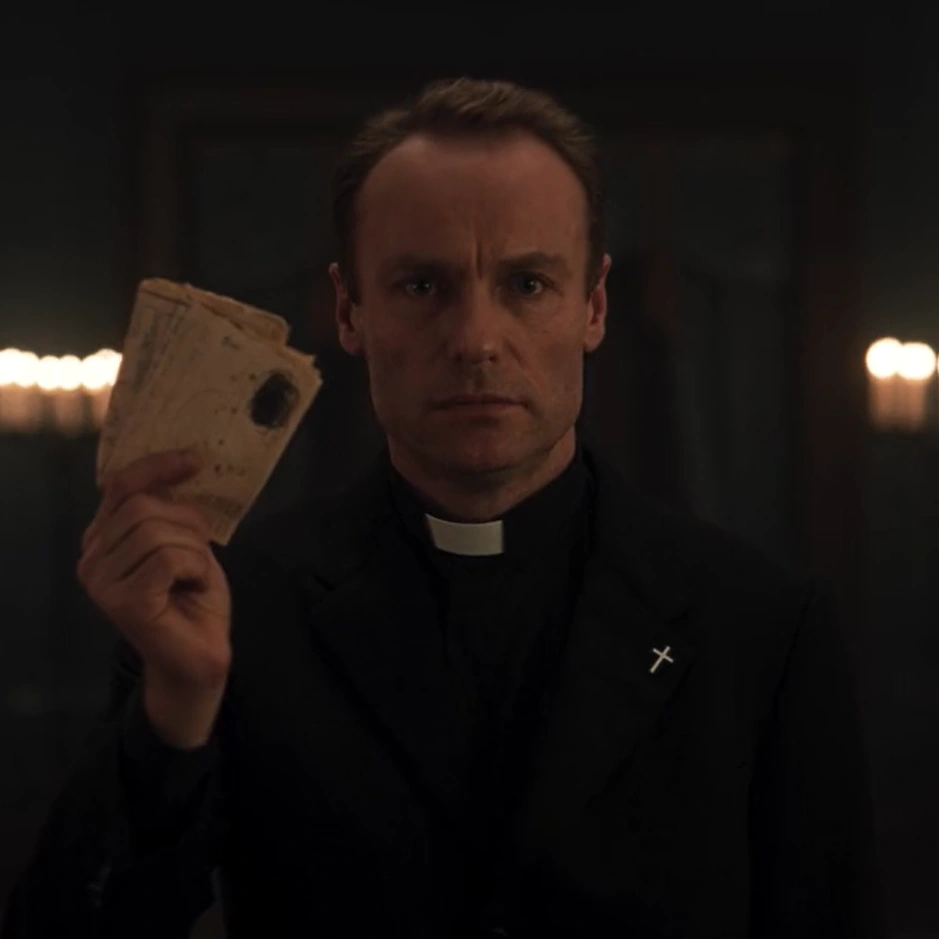
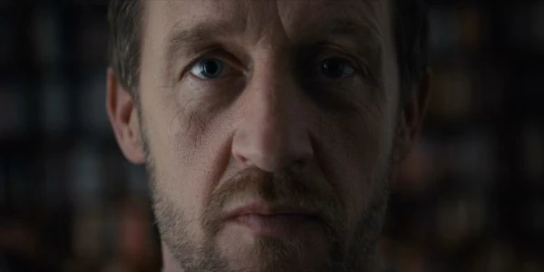
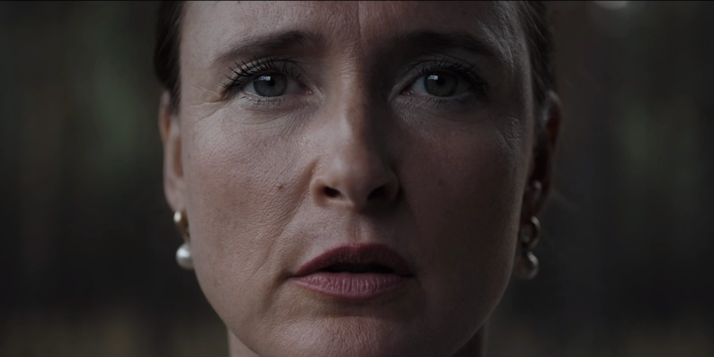
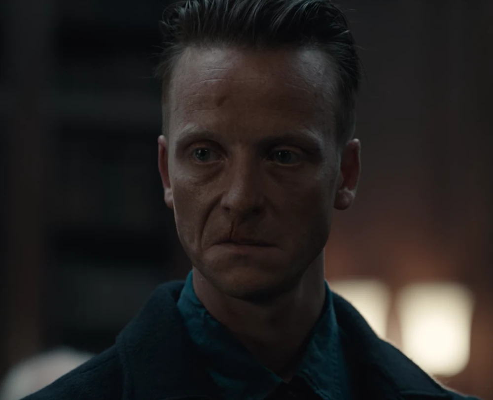
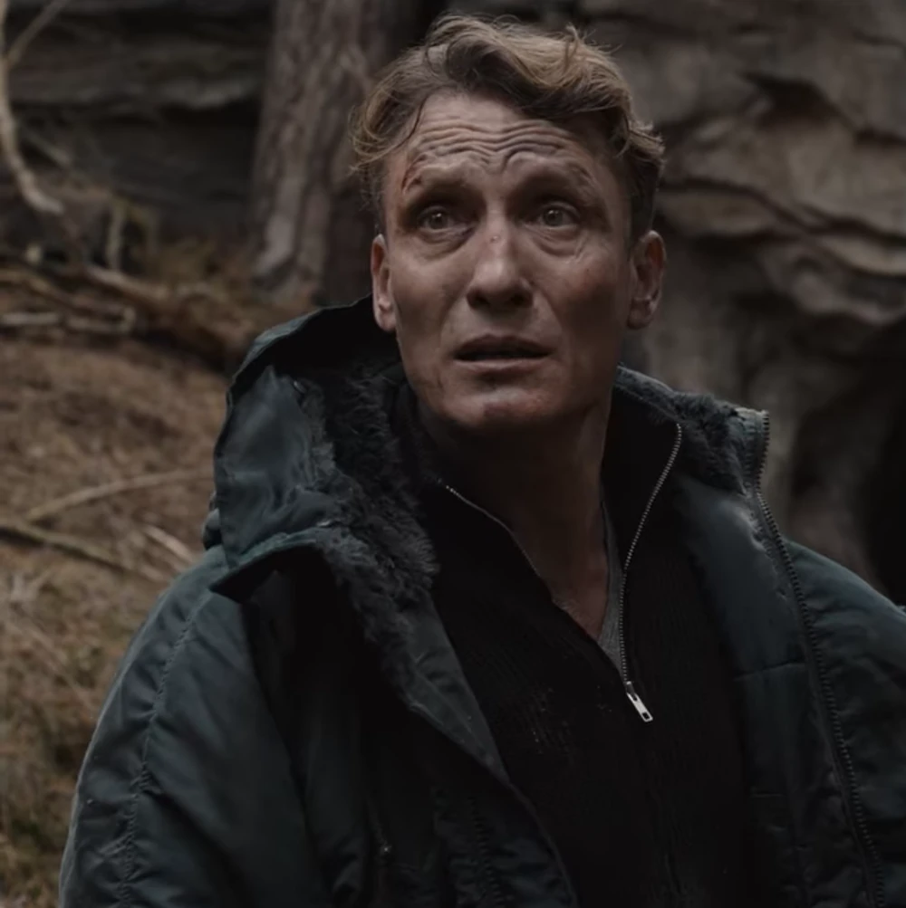

How can a person be distinguished from their different
temporal manifestations while preserving a common identity
and representing changes in name, age, role, family,
world, and time?
The ontology represents Mikkel Nielsen and Michael Kahnwald
as two temporal manifestations of the same persistent person.
Person manifestations
Object property
Persistent person
01
PersonManifestation
Mikkel_2019
Label
Mikkel Nielsen
Age
11
Family
NielsenFamily
World
AdamWorld
Year
Year_2019
manifestationOf
→
P
Person
MikkelNielsen
The persistent personal identity shared by the
manifestations known as Mikkel Nielsen and
Michael Kahnwald.
hasCanonicalName
Mikkel Nielsen /
Michael Kahnwald
02
PersonManifestation
Michael_2019
Label
Michael Kahnwald
Age
44
Family
KahnwaldFamily
World
AdamWorld
Year
Year_2019
manifestationOf
→
Modelling result
Mikkel and Michael coexist in
Year_2019
with different names, ages, and families, while remaining
manifestations of the same persistent person.
01 / 02
Case study 02
Her daughter
is also her mother.
The temporal loop creates a reciprocal parenthood relation:
Charlotte is Elisabeth’s mother, while Elisabeth is also
Charlotte’s mother.
Person
CharlotteDoppler
hasManifestation
Charlotte · InfantCharlotte
parentOf
parentOf
Person
ElisabethDoppler
hasManifestation
Elisabeth · AdultElisabeth
Modelling result
parentOf
cannot be declared asymmetric: Charlotte is a parent of
Elisabeth, while Elisabeth is also a parent of Charlotte.
However, the property remains irreflexive because neither
person is a parent of herself.
A structured overview of the classes, subclasses,
object properties, and data properties used to model
identities, worlds, events, places, and temporal
relationships in the ontology.
01
Classes and subclasses
Class hierarchy
Event
An occurrence situated in time, place,
world, and reality.
Apocalypse Event
A catastrophic event that destroys or
transforms a world.
Disappearance Event
An event recording the disappearance of
a person.
Meeting Event
An event in which two or more manifestations
meet.
Time Travel Event
A journey between different temporal,
spatial, or world coordinates.
Family
A kinship group connecting persistent
personal identities.
Organization
A structured group of people sharing a
common purpose.
Person
A persistent personal identity shared by
one or more temporal manifestations.
Time Traveler
A person inferred to participate in at
least one time travel event.
Person Manifestation
A person as they exist at a particular time,
age, name, family, and world.
Place
A spatial location in which people or events
may exist.
Interworld Space
A location situated between otherwise
distinct worlds.
Reality
A level of existence containing one or more
worlds and their events.
Role
A social, professional, or organizational
function held by a person.
Organization Role
A function held by a person within an
organization.
Professional Role
A professional function associated with
a person.
Temporal Entity
A temporal dimension used to locate identities
and events.
Time Interval
A temporal extent with a duration.
Year
A calendar year used as a temporal
coordinate.
Time Travel Device
A device or mechanism capable of enabling
temporal movement.
Cave Passage
A passage through the Winden caves that
connects different years.
World
A distinct world with its own people, places,
events, and causal history.
02
Object properties
37 properties
Identity and worlds
existsDuring
Connects an entity to its temporal entity.
existsInWorld
Connects an entity to the world in which
it exists.
hasAlternateWorldCounterpart
Connects corresponding entities in different
worlds.
hasManifestation
Connects a persistent person to one of
their manifestations.
manifestationOf
Connects a manifestation to its persistent
person.
locatedIn
Connects an entity to its spatial location.
Families and relationships
adoptiveChildOf
Connects an adopted child to an adoptive
parent.
adoptiveParentOf
Connects an adoptive parent to an adopted
child.
childOf
Connects a person to one of their parents.
parentOf
Connects a person to one of their children.
siblingOf
Connects two people who are siblings.
spouseOf
Connects two people who are spouses.
memberOfFamily
Connects a manifestation to a family.
hasFamilyMember
Connects a family to one of its members.
hasRelationshipWith
Connects two people who are in a romantic relationship.
Events and participation
hasParticipant
Connects an event to one of its participants.
hasTraveler
A subproperty of
hasParticipant
connecting a travel event to its traveler.
participatesIn
Connects an entity to an event in which
it participates.
isTravelerIn
A subproperty of
participatesIn
connecting a traveler to a travel event.
occursAtPlace
Connects an event to the place where it
occurs.
occursAtTime
Connects an event to its temporal coordinate.
occursInReality
Connects an event to the reality in which
it occurs.
occursInWorld
Connects an event to the world in which
it occurs.
Time travel
departsFromPlace
Identifies the departure place of a journey.
departsFromTime
Identifies the departure time of a journey.
departsFromWorld
Identifies the departure world of a journey.
arrivesAtPlace
Identifies the arrival place of a journey.
arrivesAtTime
Identifies the arrival time of a journey.
arrivesInWorld
Identifies the arrival world of a journey.
passesThroughPlace
Connects a journey to a place traversed
during travel.
usesDevice
Connects a travel event to the device used.
isUsedIn
Connects a device to an event in which
it is used.
Organizations and roles
belongsToOrganization
Connects a person to an organization.
hasOrganizationMember
Connects an organization to one of its
members.
hasRole
Connects a person to a role they hold.
isRoleOf
Connects a role to the person who holds it.
Construction
built
Connects a builder to the entity they built.
builtBy
Connects a constructed entity to its builder.
03
Data properties
7 properties
hasAge
Records the age associated with a person
manifestation.
hasCanonicalName
Records the canonical name of a persistent
entity.
hasDescription
Provides a textual description of an entity.
hasManifestationName
Records the name used by a specific person
manifestation.
hasSourceReference
Records the source used to support an
ontological assertion.
hasYearValue
Records the numeric value associated with a
Year individual.
isIntentional
Indicates whether an event was performed
intentionally.
The complete ontology is available in Turtle format.
The source can be inspected below or downloaded as a
standalone file.
dark_ontology.ttl
RDF · OWL · TURTLE
Loading ontology source…
02 / THE ANSWERS
SPARQL queries
From model.
To knowledge.
How can knowledge represented in an ontology be queried and explored?
The following SPARQL queries demonstrate how the Dark knowledge graph can be interrogated to extract structured information about persistent identities and their temporal manifestations, family relationships, narrative worlds, events, and time-travel connections.
Dark is a narrative built on an extraordinary density of relationships: intertwined family trees, multiple timelines, temporal manifestations, parallel worlds, and events whose causes and consequences often cross the boundaries of time. This complexity makes the series an especially interesting domain for semantic modelling. But before building a new ontology, a fundamental question had to be addressed: does a formal ontology of Dark already exist?
Unlike other fictional universes, no official or widely standardised ontology specifically dedicated to Dark was identified in the research conducted for this project. In particular, no established OWL/RDF model was found that formally represents the series' characters, temporal manifestations, worlds, events, and relationships as a coherent ontology. What does exist, however, is a range of alternative attempts to structure and visualise the knowledge contained in the series.
One significant approach comes from the development community, where data extracted from fan-maintained wikis has been transformed into relationship graphs and network structures. Projects such as Graph Analysis and Relationship Extraction from Dark demonstrate how information about characters, biographies, family relationships, and temporal paradoxes can be extracted from the Dark Netflix Fandom and represented as a graph for further analysis.
A similar direction can be found in the Dark Characters Network project, which uses web crawling and network analysis to collect relationships between characters and visualise them as a connected structure. These projects demonstrate that the universe of Dark can naturally be understood as a network of entities and relationships. However, they do not provide the formal ontological layer required to explicitly define the meaning, hierarchy, and semantics of those relationships in OWL/RDF.
Another important reference is Netflix's official interactive Dark website. Rather than exposing an OWL ontology, the platform offers a dynamic visual representation of the series' narrative structure. Characters, places, objects, and temporal connections can be explored according to the season and episode reached by the viewer. The result is an intuitive way of navigating the increasingly complex network of relationships while limiting the risk of spoilers.
These existing approaches reveal an important distinction. Dark has already been represented as a network, visualised as an interactive structure, and analysed through extracted relationships — but these approaches do not constitute a formal ontology of the domain. This gap provides the starting point for the present project.
Building an ontology for Dark therefore means moving from simply connecting pieces of information to formally representing what those entities are, how they relate to one another, and under which temporal and narrative conditions those relationships hold.
The complexity that makes Dark difficult to follow is precisely what makes it valuable as a knowledge representation problem. Family relationships can become paradoxical, the same person can appear through different temporal manifestations, and apparently separate events may be connected across different worlds and points in time. These characteristics provide a rich environment for testing how an ontology can represent a fictional world in a structured, machine-readable, and queryable form.
02
Philosophical references
Beyond its intricate plot and science-fiction framework, Netflix's Dark functions as a profound ontological exploration of human existence, time, and causality. The series rejects the traditional linear progression of time — where the past moves cleanly into the present and future — in favor of a closed, deterministic loop where cause and effect are inextricably fused. To construct this narrative, the show draws deeply upon core philosophical traditions, fusing physics-based temporal logic with metaphysics, classical determinism, and existential dread.
At the mechanical core of the series lies the Novikov Self-Consistency Principle and the bootstrap paradox. Time operates as a rigid, self-sustaining circle: actions taken by characters attempting to alter the past end up causing the very events they intended to prevent. Past, present, and future do not merely influence one another sequentially; they coexist and act upon each other simultaneously, dissolving the boundaries of linear causality.
This temporal framework is sustained by several major philosophical paradigms:
Nietzsche's Eternal Recurrence: The narrative embodies Friedrich Nietzsche's thought experiment, wherein existence is trapped in a cyclical repetition. Characters are condemned to relive their choices, suffering, and mistakes indefinitely across time and parallel worlds, highlighting the crushing weight of an infinite loop.
Leibniz's Rationalism and the Principle of Sufficient Reason: Gottfried Wilhelm Leibniz argued that nothing happens without a cause or reason (Ratio). In Dark, every event, paradox, and familial link—no matter how illogical it appears on the surface—has a definitive rational cause embedded within the broader structure of the multiverse, illustrating a universe governed by absolute metaphysical order.
Schopenhauerian Determinism: Arthur Schopenhauer's famous assertion—"A man can do what he wills, but he cannot will what he wills"—serves as a central thematic motif. The characters possess the feeling of agency and can execute their desires, yet they cannot choose the underlying motivations, fears, and grief that drive those desires. Thus, their illusion of free will becomes the very engine that drives their entrapment.
Existential Dread and the Search for Meaning: Facing an inescapable web of fate, the characters grapple with core existentialist dilemmas. In a world where every action is predetermined, they are forced to confront the angst ($Angst$) of identity, purpose, and the agony of trying to forge personal meaning in a universe stripped of genuine autonomy.
Ultimately, Dark presents a world governed by an uncompromising metaphysical necessity. The tragedy of its characters lies not in their lack of effort to break the cycle, but in the paradox that every conscious act of resistance is precisely what binds the knot tighter.
"
The distinction between past, present and future is only a stubbornly persistent illusion.
ALBERT EINSTEIN
03
Tools used
The ontology was developed using the following tools and technologies:
The complete cast of Dark, organized alphabetically. Each card represents a persistent character across time. Clicking on a character reveals their different temporal manifestations, where available.
Agnes Nielsen
The Nomad
A mysterious woman who moves between time periods, connected to both Adam and Claudia.
Aleksander Tiedemann
The Director
Director of the Winden nuclear power plant, whose past holds dark secrets.
Bartosz Tiedemann
The Conflicted
Jonas's best friend, torn between loyalty and the pull of Adam's world.
Charlotte Doppler
The Detective
Police chief of Winden, caught in a temporal paradox — daughter and mother of Elisabeth.
Claudia Tiedemann
The White Devil
The time-traveling scientist who seeks to break the cycle across all realities.

Egon Tiedemann
The Inspector
A police inspector investigating the disappearance of children in 1953.

Elisabeth Doppler
The Paradox
A deaf girl caught in a time paradox — she is both daughter and mother of Charlotte.
Franziska Doppler
The Rebel
Charlotte's eldest daughter, rebellious and protective of her sister Elisabeth.
Hannah Kahnwald
The Manipulator
Jonas's mother, driven by jealousy and obsession that spans across time.
Helge Doppler
The Pawn
A man used as a pawn in the time travel experiments, scarred by his past.
H.G. Tannhaus
The Watchmaker
The creator of the time machine, whose grief creates the entire time loop.
Ines Kahnwald
The Nurse
A nurse who raises Mikkel as her adopted son, keeping his true identity secret.
Jonas Kahnwald
The Stranger · Adam
The protagonist, whose journey across time transforms him into the enigmatic Adam.
Katharina Nielsen
The Mother
A mother desperate to save her children, whose determination defies time itself.

Mads Nielsen
The Lost
Ulrich's brother who disappears in 1986, becoming one of the time experiments.
Magnus Nielsen
The Observer
Ulrich's son, who witnesses the unraveling of his family across time.
Adam World
Martha Nielsen
The Lost Love
Jonas's love interest in Adam's world, whose fate is tied to the cycle.
Eva World
Martha Nielsen
Eva
Jonas's love interest in Eva's world, who becomes the leader of the resistance.

Mikkel Nielsen
Michael Kahnwald
A boy who travels to 1986 and becomes his own grandfather's father.

Noah Tauber
The Priest
A mysterious figure serving Adam, whose true identity is revealed across seasons.

Peter Doppler
The Therapist
Charlotte's husband, a therapist struggling with family secrets and time travel.

Regina Tiedemann
The Innocent
Claudia's daughter, an innocent victim caught in the web of time travel.
Silja Tiedemann
The Wanderer
A mysterious figure who appears across time, connected to multiple families.

Unknown
The Anomaly
A mysterious entity whose true nature and purpose remain hidden across the series.
Tronte Nielsen
The Journalist
A journalist and patriarch of the Nielsen family, connected to Claudia.

Ulrich Nielsen
The Detective
A police officer who travels to 1953 in search of his missing son.